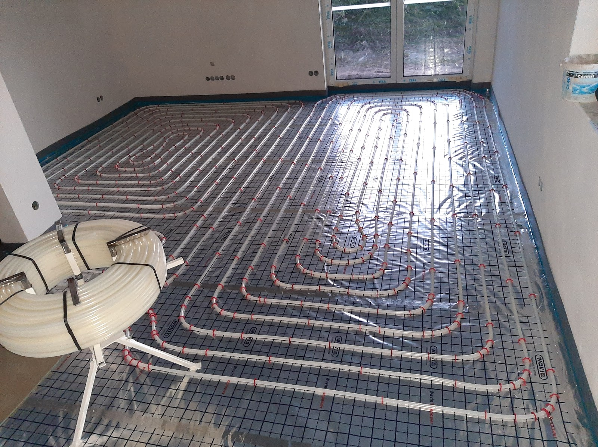
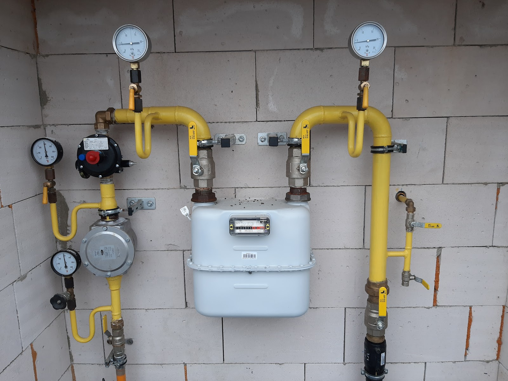

Rekonstrukce a montáž ústředního topení včetně podlahového vytápění, rozvody vody a kanalizace, plynové přípojky, kotle a jejich servis. Pracuji v Pardubicích a v okruhu asi 20 km – od Sezemic po Přelouč a Holice.
Práce provádím od drobných oprav po kompletní rekonstrukce rozvodů v rodinných domech a bytech.
Montáž a rekonstrukce ústředního topení, včetně podlahového vytápění – kladení trubek na systémovou desku, napojení na rozdělovač a zaregulování okruhů. Dodám a osadím i atypické radiátory na míru.
Nové i rekonstruované rozvody studené a teplé vody, odpadů a kanalizace v domech a bytech. Instaluji i domácí filtrační sestavy na vstupu vody do objektu.
Montáž plynových přípojek k domu, rozvody k plynoměru a spotřebičům, osazení regulátorů tlaku. Práce provádím v souladu s revizními požadavky plynárenských předpisů.
Montáž nových kotlů, servis a opravy stávajících. Poruchy řeším přímo na místě, pokud to rozsah dovolí – bez zbytečného objednávání náhradních výjezdů.
Řeším havárie na přípojkách, prasklá potrubí a náhlé výpadky topení – i v předvánočním období, kdy čekání není na místě. Situaci se snažím vyřešit rychle a s improvizací, pokud je potřeba.
Výměna zastaralého vodovodu, kanalizace a topení najednou při rekonstrukci domu nebo bytu – od demontáže starých rozvodů po zprovoznění nových.
Zaměřuji se na topenářské, instalatérské a plynařské práce v Pardubicích a okolních obcích. Zvládám jak drobné opravy a servis kotlů, tak kompletní rekonstrukce rozvodů v rodinných domech i bytech, včetně plynových přípojek a podlahového vytápění.

Zavoláte, napíšete e-mail nebo vyplníte formulář a popíšete, o co jde – od poruchy kotle po rekonstrukci rozvodů.
Přijedu se na místo podívat, zaměřím rozsah práce a sdělím vám cenu ještě před tím, než se do čehokoli pustím.
Práci provedu v dohodnutém termínu. Pokud se během realizace objeví něco navíc, řeším to s vámi předem, ne po faktu.
Po dokončení vše zkontrolujeme společně, uklidím po sobě a předám doklady k použitému materiálu.
„Pan Faltýnek nám rychle a profesionálně vyřešil havárii na horkovodní přípojce k rodinnému domu a to týden před Vánocemi 2020. Následně nám sehnal a profesionálně instaloval atypický radiátor ústředního topení. Korektní jednání, profesionální přístup, při nečekaných obtížích schopnost improvizace k vyřešení situace.“
„Pan Faltýnek přijel během asi deseti minut a opravil plynový kotel doslova na počkání. Rozhodně doporučuji.“
„Pravidelně tuto firmu najímám na rekonstrukce vodovodu, kanalizace a topení.“
„Záhada nefungujícího topení rychle vyřešena. Děkuji“
Železničního pluku 2485
530 02 Pardubice-Pardubice V
Do vzdálenějších obcí v okolí Pardubic vyjíždím po telefonické dohodě – ozvěte se a upřesníme termín.
| Pondělí – pátek | 8:00 – 17:00 |
| Sobota | Zavřeno |
| Neděle | Zavřeno |
Záleží na rozsahu práce, použitém materiálu a stavu stávajících rozvodů. Cenu vám sdělím po prohlédnutí zakázky přímo na místě, ne odhadem po telefonu.
Snažím se reagovat co nejdřív, záleží na aktuální vytíženosti a vzdálenosti. Nejrychlejší je zavolat přímo na 775 565 693 a popsat, o co jde.
Ano, u nových i upravovaných plynových rozvodů provádím tlakové zkoušky v souladu s požadavky na uvedení do provozu.
Materiál běžně dodám a namontuji já – trubky, tvarovky, filtry i kotle. Pokud máte vlastní materiál nebo konkrétní požadavek na značku, domluvíme se.
Obecně se doporučuje pravidelná roční kontrola podle pokynů výrobce kotle. Pomůže to odhalit drobnou závadu dřív, než se z ní stane porucha uprostřed topné sezóny.